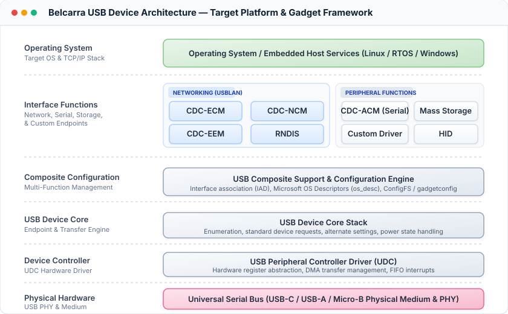

Gadget
This page captures device-side (gadget) implementation guidance for reliable interoperability with USBLAN on Windows 11 hosts.
Target host environments
- Windows 11 amd64
- Windows 11 arm64
- Windows 10 amd64 (Note: ARM64 is supported on Windows 11 only)
Descriptor and interface expectations
- Expose clear, stable interface descriptors for the selected networking protocol mode.
- For composite devices, keep interface numbering stable so host-side MI matching remains deterministic.
- Ensure descriptor changes are versioned and validated across firmware releases.
Protocol mode guidance
- Choose the protocol mode (RNDIS, ECM, EEM, NCM) intentionally per product line.
- Avoid unnecessary protocol switching across minor firmware updates.
- Document any protocol-specific limits in throughput, MTU handling, or framing behavior.
Operational behavior checklist
- Verify clean link bring-up after cable connect and host enumeration.
- Validate IP address assignment model (DHCP or static) for the expected deployment profile.
- Confirm stable reconnect behavior across repeated unplug/replug cycles.
- Validate sleep/resume recovery without stale link state.
Recommended interoperability tests
- Long-duration sustained transfer test (throughput and stability)
- Repeated connect/disconnect test cycle
- Suspend/resume and reboot sequence validation
- Multiple attached device scenario (if supported by product requirements)
USB Framework Architecture
The diagram below illustrates the complete device-side USB software and hardware framework—spanning the target operating system, composite interface functions (CDC-NCM, CDC-EEM, CDC-ECM, RNDIS, serial, storage, and HID), USB device core stack, and the peripheral controller driver (UDC) to the physical medium:

Linux gadget configuration tools (gadgetconfig)
For Linux-based devices (such as Raspberry Pi, BeagleBone, and custom embedded SoCs), Belcarra maintains the open-source gadgetconfig package to configure Linux kernel ConfigFS (libcomposite) gadgets via declarative JSON and systemd:
- Declarative JSON schema: Define device descriptors, interface functions (CDC-ECM, CDC-EEM, CDC-NCM, RNDIS, CDC-ACM, HID), and configurations in structured files.
- Microsoft OS Descriptors: Native
os_descconfiguration for deterministic driver binding on Windows hosts. - Early-boot deployment: Convert JSON definitions to shell scripts using
gadgetconfig --sh-autofor minimal initramfs or early-init environments. - Package installation: Available on PyPI (
pip3 install gadgetconfig) and GitHub at Belcarra/gadgetconfig.
Evidence to retain per release
- Descriptor snapshot and firmware build identifiers
- Protocol mode test logs and pass/fail summary
- Known issues and mitigation notes